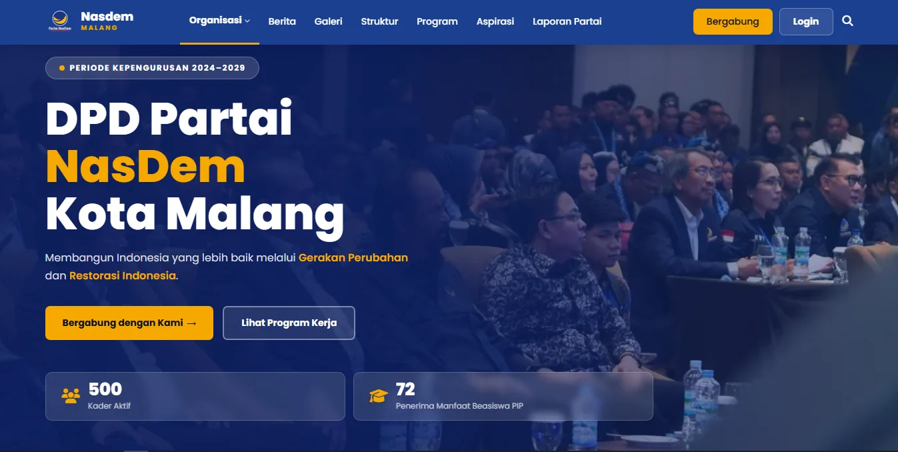
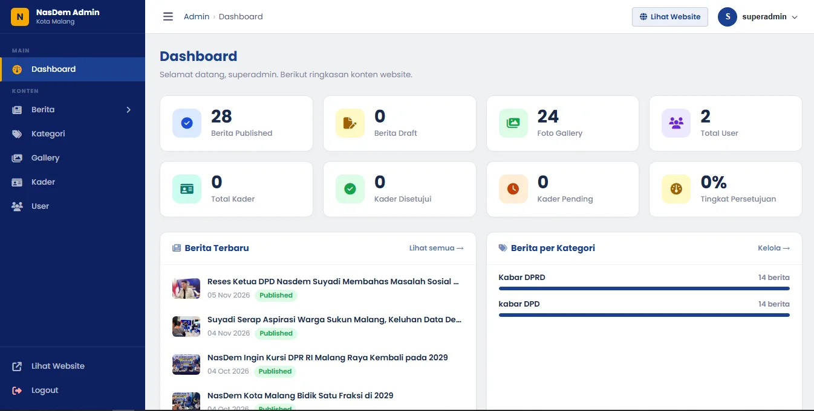

Website DPD NasDem Malang
Website profil organisasi yang berisi berita, agenda, dan galeri, dikelola lewat panel admin. Proyek klien yang sudah live.
Lihat Website ↗Junior Web Developer · Malang, ID
Saya membangun sistem web dengan Laravel dan REST API, dari website klien yang sudah live sampai sistem informasi berbasis API.
Projek


Website profil organisasi yang berisi berita, agenda, dan galeri, dikelola lewat panel admin. Proyek klien yang sudah live.
Lihat Website ↗Absensi sekolah berbasis QR Code dan validasi lokasi GPS, dengan notifikasi ke orang tua dan jurnal guru terintegrasi.
Lihat Demo ↗REST API untuk pendataan warga RT, dengan klien web React dan ekspor data ke PDF dan Excel.
Demo menyusulTentang & Pengalaman
Siswa SMKN 11 Malang jurusan Rekayasa Perangkat Lunak, lulus Maret 2027. Fokus saya Laravel dan REST API, dengan sisi frontend memakai React.
Saat magang saya mengelola website berita dan belajar SEO, jadi saya terbiasa memikirkan bagaimana sebuah halaman ditemukan orang, bukan hanya bagaimana ia dibangun.
Keahlian
Backend
Database
Frontend
Integrasi & Tools
Kontak
Terbuka untuk posisi junior web developer mulai Maret 2027. Proyek freelance terbatas juga bisa didiskusikan.